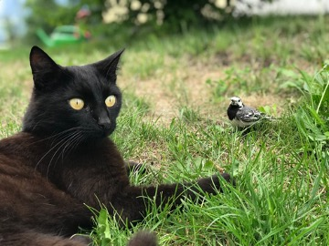

Adoption
The following organizations can help you find and adopt the perfect companion:
We are also happy to help you navigate the adoption process! We will guide you through each step in the process from determining which type of pet is best suited for your family and home environment, to completing the necessary paperwork, to bringing your new loved one home. Please fill out our contact form to request a consultation. We will contact you within 48 hours to schedule a consultation. All fields are required.
Embrace the Pet Paradigm
Promoting Health and Happiness Through Pet Ownership
Pets are nature's gift to humanity. It has been scientifically proven that opening our homes and hearts to a pet increases our longevity and improves our overall quality of life as well as the lives of our pets. At Pet Paradigm Professionals, our mission is to offer resources to help you care for your furry, scaly, feathery, and slimy loved ones. Our pet experts—or “Pexperts”—have been working with pet owners and professionals alike for the past twelve years. They offer one-on-one consultations with current and prospective pet owners as well as group presentations designed for veterinary, pet shelter, and pet breeding professionals.
Cats
Cats were first domesticated around 7500 BCE in the western Asia region and are currently the second most popular domestic pet in the United States. While there are over 60 unique documented cat breeds, care and diet can differ between breeds. However, some diets and practices are generally recommended for the well-being of your fluffy family member regardless of breed.
It is important the queen (a term commonly used for a female cat that is either pregnant or nursing) directly nurse her young if possible. Monitor your kitten's growth closely to make sure its growth rate is progressing steadily. If any kitten is not growing at a sufficient rate, a caretaker might need to feed the kitten directly either with a bottle or a feeding tube.
Some reasons why kittens might not gain weight appropriately include the following:
- too many other siblings are competing for mom's milk
- gastrointestinal disease
- environmental conditions such as extreme heat or cold, or unsanitary conditions
Kittens can start being introduced to soft wet kitten food typically around three to four weeks after birth. According to the ASPCA, kittens at this age should eat half to one cup of dry kitten food or six to nine ounces of wet kitten food per day. If your kitten has difficulties eating hard food, a small amount of water can be added to soften the food. Cat food that is optimized for kittens provides the additional nutrients that are needed for growth, energy, and wellness. Depending on the breed, your cat may have different dietary requirements. You should always consult with your veterinarian for recommendations.
This age is when kittens reach the cat stage and do not need as many nutrients. At this age, their level of activity decreases, and so does their metabolism. It is not recommended to leave food out for the cats all day. Instead, provide food a couple times a day so they eat meals rather than snacking throughout the day. This practice reduces the risk of obesity and other weight-related feline ailments.
Much like many living organisms, the body begins to deteriorate and experience a lot of changes. Cats at this age should eat less fats and calories and more quality proteins. This means when you are purchasing packaged foods for your cat, look for food that states a particular protein (such as "salmon") and not just a category (such as fish). This usually means they are byproducts, or combinations, of lesser quality proteins.
Dogs
The domestic dog is an extremely social animal and offers a diverse variety of choices as there are well over 300 breeds recognized by the World Canine Organization. Adopting a dog offers mutual benefits between dog and owner. Many studies cite the social benefits of having a companion as well as the reduced feelings of loneliness from adopting a dog. Studies even show medical indicators such as reduced blood pressure and improved lipid profiles. If you have a dog, it is important to make sure that you care for your dog; be mindful of what you feed your dog and provide enough opportunities for exercise. In this page, you will find more information about how to care for your pets throughout the various stages of their lives.
Throughout dogs' lifespans, they should generally be fed fewer meals as they mature. Puppies should be nursed the first two months, then introduced to three meals per day when they are about three to six months years old. Their food intake should be reduced to two meals per day when they are six months to one year old and finally reduced to one meal after they reach one year old. And a dog's typical body mass is composed of somewhere between 60 and 70 percent water. The ASPCA says just a 10 percent decrease in body water can cause illness, and a 15 percent loss can cause death, so make sure you keep your pooch hydrated!
Much like humans, dogs need to have a healthy level of activity to keep their organs healthy, as well as sun and fresh air. The minimum recommended time for exercise varies greatly with breed and size differences, but generally a range of 30--120 minutes of exercise is recommended per day! Can you imagine exercising two hours per day? OK, I know that wouldn't bother some of you reading this. But the thought of it to me makes me cringe! And by the way, exercising your dog does not mean you are being challenged to a push-up contest. Brisk walks are OK too! You can also choose from a variety of toys to encourage physical activity; just be sure they are age appropriate and do not pose a choking hazard. Pay careful attention to toys that require supervision.
Keeping your furry family member clean is important to its health. So be sure to brush frequently to reduce the amount of shedding and prevent matted and tangled fur that can prove to be extremely difficult to remove. Check for insects such as ticks and fleas, especially after visiting heavily wooded areas. Bathing is not only important to your dog's health but can be an exercise depending on how strong willed the dog is. Rinse all of the soap out, as any residual soap can result in a rash. Be sure the soap is formulated for your puppy or dog, since harsh soaps can cause allergic reactions. And as always, be careful how you handle your loved one. No matter the size of your dog, you need to be cautious as you carry your canine. If you have a small dog, then cradle the pup with one hand under the chest and the forearm supporting the back half. If it is a large dog, reach under the belly with both your arms perpendicular to the dog, and use each arm to support the chest and rear as you lift.
You should always consult with your veterinarian, but there is a core set of vaccines that are typically recommended. Vaccines that reduce the exposure risk to things such as hepatitis, rabies, and parvovirus. Others may be determined by your vet depending on the environment in which the dog resides. Some of these include Bordetella bronchiseptica, Borrelia burgdorferi, and Leptospira bacteria.
Fish
Fish represent a broad class of aquatic animals that can live in fresh or saltwater, depending on the species. Bringing fish into your home can be an exciting hobby, especially if you intend to breed them, and the presence of a fish tank in your home can induce feelings of peace and tranquility.
Whether you are bringing your fish home for the first time or maintaining your aquarium, it is important to test your water once per week to ensure it is free from toxins that can harm your fish.
There are several freshwater fish to choose from when setting up your aquarium, but it is best to consult with a "Pexpert" to ensure your fish will get along! No matter the species, ensure your fish are suited for a freshwater environment by investing in a water testing kit. Follow these general water chemistry guidelines to ensure your fish will adapt well to your aquarium and avoid ingesting toxins that can harm or kill your fish:
- pH Level: 6.8--7.6 (7.0 is considered neutral)
- Ammonia: any level above zero is harmful to fish
- Nitrates: 5 to 10 ppm
- Nitrites: less than 0.5 ppm
Saltwater fish also offer several options when it comes to choosing among species for your aquarium. As with freshwater fish, consult with a "Pexpert" to ensure your fish will get along are suited for a saltwater environment. Following these general guidelines to avoid dangerous water conditions and ensure the appropriate salinity level for your fishies:
- Salinity: 1.020--1.028 sg
- pH Level: 7.6--8.4 (7.0 is considered neutral)
- Ammonia: any level above 0.1 ppm requires attention
- Nitrates: 10 to 40 ppm
- Nitrites: less than 0.2 ppm
For more information on making your tap water safe for your fish, please visit: http://www.theaquariumwiki.org/wiki/How_to_make_tap_water_safe_for_fish
Visit http://fishbase.org/home.htm for additional resources on fish care.